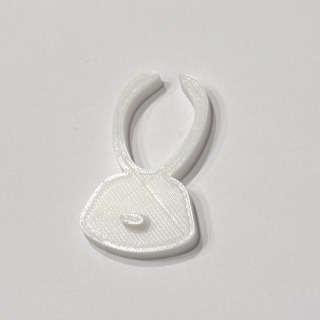

第1回 3Dprinting
デザイン性を重視したピンセット
現在ピンセットは、シルバーの一定な形をしたピンセットが主流となっているため、
今回３Dプリンターを使用してピンセットを作成するにあたって、
使いやすさよりデザイン性を重視したものを作成しようと考えました。
ハート×ピンセット
【1回目】可愛いデザイン。。。可愛いものは何か、と考えた時に一番最初に思いついたのがハートだったので、
ハートとピンセットを組み合わせて作ってみました。
しかし1回目は薄すぎる上に挟む部分の開きが足りず、挟みづらくなってしまいました。
【2回目】
今回は大きさも厚さも挟む部分の開きも上手くいきました。
うさぎ×ピンセット
次にうさぎとピンセットの組み合わせでデザインしてみることにしました。うさぎと組み合わせる上で、挟む部分は耳にしたら可愛いし使いやすいのではないかと考えました。
【1回目】
全体的に分厚くし過ぎてしまったため、耳の部分が曲がらずピンセットとしての機能がなくなってしまいました。
【2回目】
【1回目】の反省を生かして全体的に薄くして作成しましたが、
耳の付け根の部分が幅広いことが曲がりずらさにつながっていることに気づいておらず、
2回目も耳が曲がらず挟むことができないピンセットとなってしまいました。
1回目と2回目の反省を活かして、耳の付け根の幅を狭くすると同時に、耳を少し長くしてより挟みやすい
うさぎのピンセットとなるように作りました。

【3回目】

1回目と2回目の反省点を活かし、改良をした結果3回目で完成形を作ることができました。
支柱を用いたピンセットを作る上で、組み合わさる部分の厚みを考えないと重ならなくなってしまうのに
そこに気づく前に1回目を作ってしまったので失敗。。。
反省を活かして、重なる部分となる実の部分の片方を少し厚めに設計。
【2回目】

今回は実の部分でしっかりと掴めるようなさくらんぼのピンセットができました。
横から見てみると、このように一部だけ厚めに作ってあります。
横浜ビブレ内のSHOP LISTの看板。
KPOPアイドルのIVEのReiが看板になっている。
피치씨/Peach Cのコスメの広告看板。
日付：2023年10月８日
撮影者：木村涼
韓国が好きなので、せっかくならハングルとピンセットの組み合わせでデザインしてみたいと考え、作成しました。
【1回目】
fusionでの結合という機能を知らず、パーツを一つずつ作成し、最後に接着剤などを使用して完成させたので
とても歪で使いづらいものが完成してしまいました。
その反省を活かして結合機能を使い設計したり、組み合わさる部分の厚みを少し変えたりと改良をしました。
【2回目】
結合機能を利用して設計したので形も綺麗にでき、組み合わさる部分も厚みを変えたのでより挟みやすい形に出来上がりました。
横から見てみると、このように一部だけ厚めに作ってあります。
まとめ
今回ピンセットと何かを組み合わせて新しいピンセットを作る上で、３Dプリンターを初めて使用しました。
fusionの使い方から躓き、その後もプリントできたと思ったら厚みによって上手く重ならず、
挟めなかったり硬くて曲がらず挟めなかったりと失敗することが多くありました。
改良を重ねていくことで、より良い作品ができたり、新たなデザインが思いついたりと、とても充実した作成期間を過ごせたと感じています。
デザイン性重視で作成したため、ピンセットとは少し離れた、単に物を挟めるものができましたが、
自分が思いデザインしたものをそのまま形にすることができたのでよかったです。